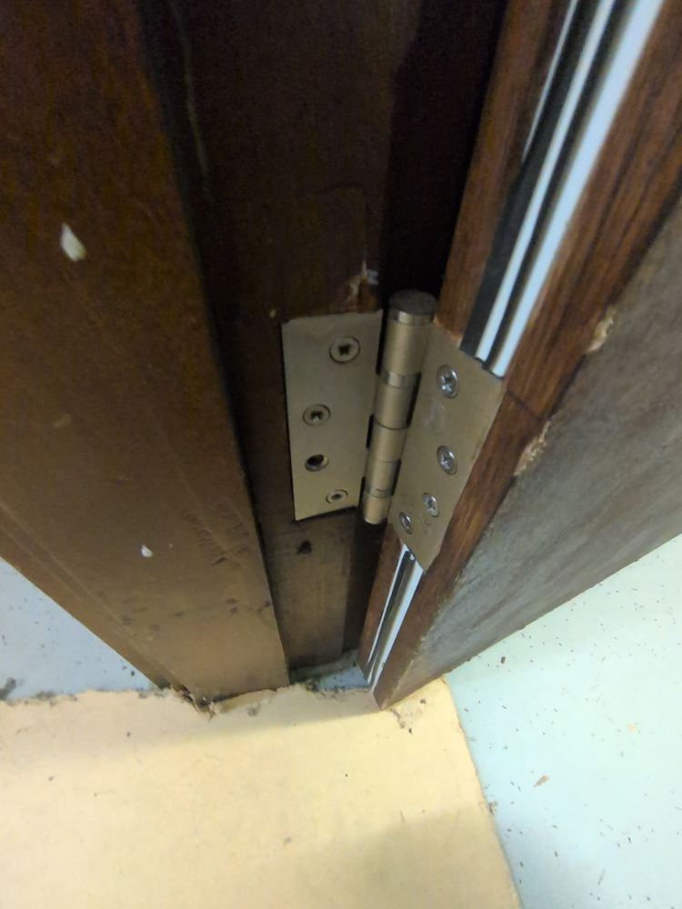
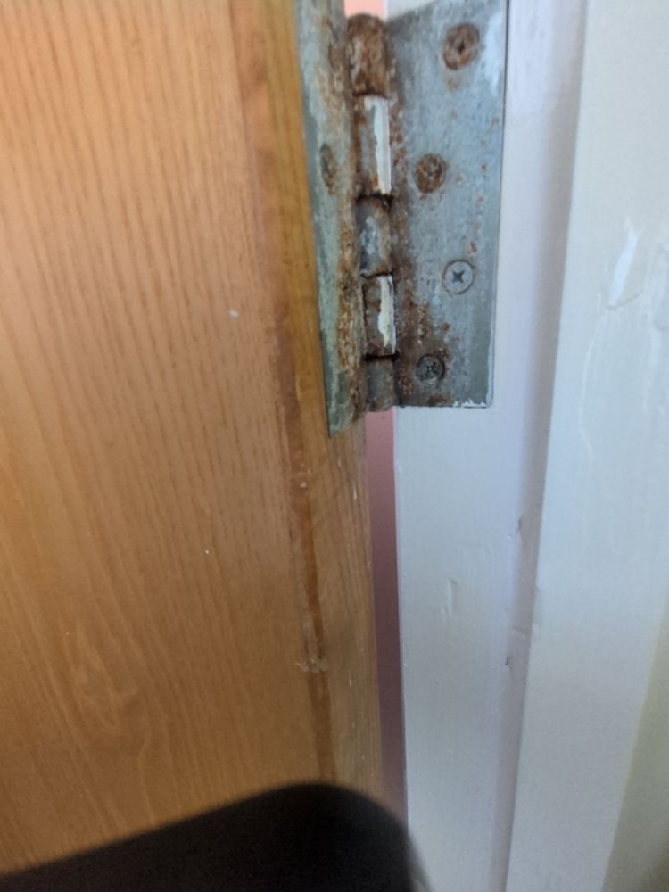
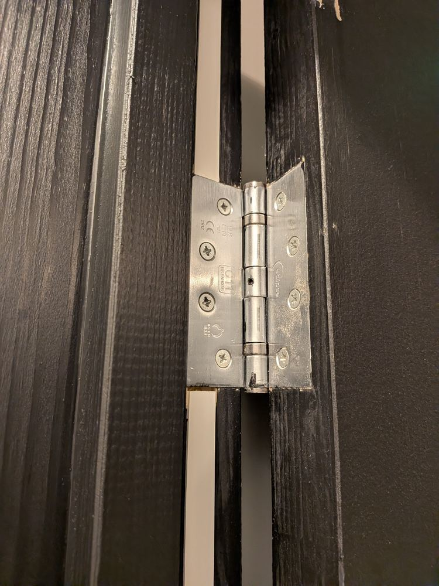
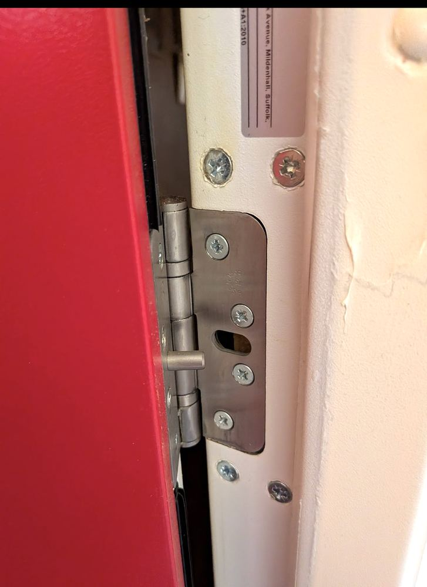

Fire door hinges: the detail that's easy to miss
A fire door assessment tends to focus on the leaf, the seals, and the closer. Hinges get a glance at most. That's a mistake — a hinge is a fire-rated, load-bearing component in its own right, and a poor one can undo everything else the door was designed to do. Here are some real examples of what to look for.
Missing screws

This is one of the most common findings on site. It looks minor, and it's often ignored for exactly that reason. Under load — and especially under heat, once the timber around the other screws starts to weaken — the remaining fixings take on more than they're rated for.
Corrosion

Corrosion this advanced usually means the hinge material wasn't right for the environment — internal hinges shouldn't be rusting like this. It's also a sign the door hasn't had any real attention in a long time, which raises the question of what else on it hasn't been checked.
What a good hinge looks like


These are what you're hoping to find. The grade tells you the hinge is rated for the door's weight and duty cycle; the standard references and certification marks confirm it's been tested for fire door use, not just sold as a generic hinge that happens to fit.
Grade 11 is often assumed to be over-specified for a standard 30-minute door. In practice it rarely is — a typical FD30 leaf, once ironmongery and glazing are added, regularly exceeds the weight limit of the lightest hinge grade. For a heavier or higher-duty door — a 60-minute FD60 door, for example — Grade 13 is the more appropriate specification. The cost difference between grades is small; the consequence of getting it wrong is a door that drops, binds, and stops closing properly.
Why it matters more than it looks like it should
None of this is about the hinge on its own. If it fails — melts, corrodes through, or simply comes loose — the door leaf can drop out of alignment with the frame, breaking the seal it's there to maintain. The leaf can be exactly the right specification and the door will still fail if the hardware holding it in place isn't.
What this looks like in a fire risk assessment
Checking hinges properly means more than confirming they're present. It means checking there are enough for the door's size and weight, that they're graded correctly, that every screw hole is filled, and that nothing has been quietly downgraded during a past repair.
Under Article 17 of the Regulatory Reform (Fire Safety) Order 2005, the Responsible Person has a duty to keep fire safety equipment — including fire doors and their hardware — maintained in efficient working order. In practice that means repairs and replacements should be carried out, or at least specified, by a competent contractor, with the work documented rather than left to whoever happened to be available on the day.
This article is for general information only and doesn't constitute fire safety advice for a specific building. It isn't a substitute for a proper fire risk assessment, which should be carried out by a competent assessor who documents their findings against the building in question.
Not sure whether your fire doors are up to standard?
Book an assessment